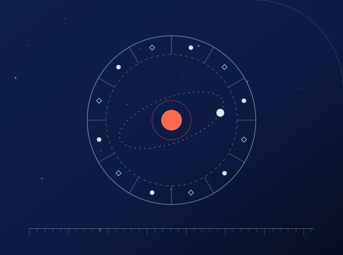
Astrology
Birth charts, transits and seasonal cycles, treated as a language for reflection rather than a forecast you must obey.
Astrology, numerology, skincare and psychology-informed wellbeing, in Bulgarian and English.
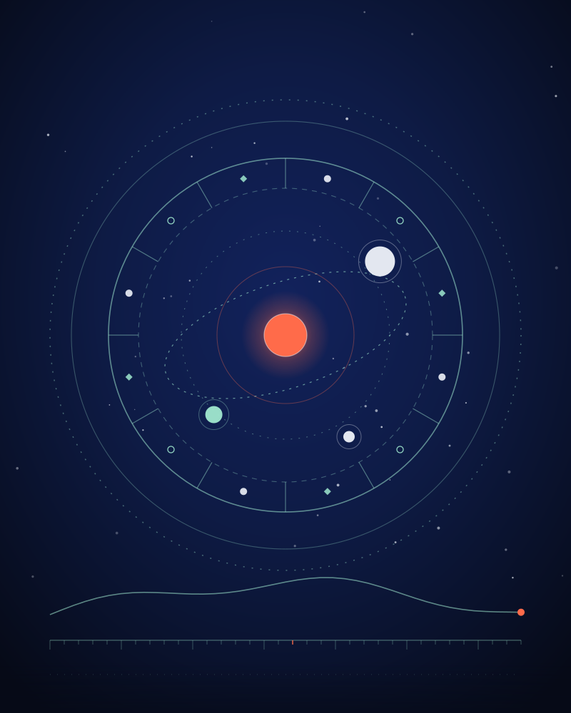
Silviya Aeterna is a personal project about the patterns we live by: the sky we were born under, the numbers we keep repeating, the skin we care for, and the mind we are growing. It is made slowly, in two languages, and it says clearly where reflection ends.
Nothing here is medical advice, diagnosis or treatment. It is material for reflection, made for curious adults and families.
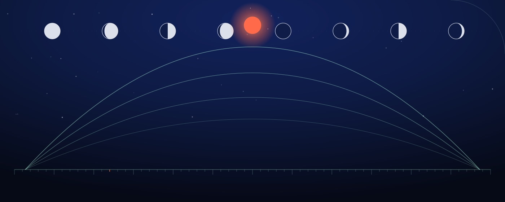
Six pillars, each with its own illustration. Together they are the full map of what this project will talk about.

Birth charts, transits and seasonal cycles, treated as a language for reflection rather than a forecast you must obey.
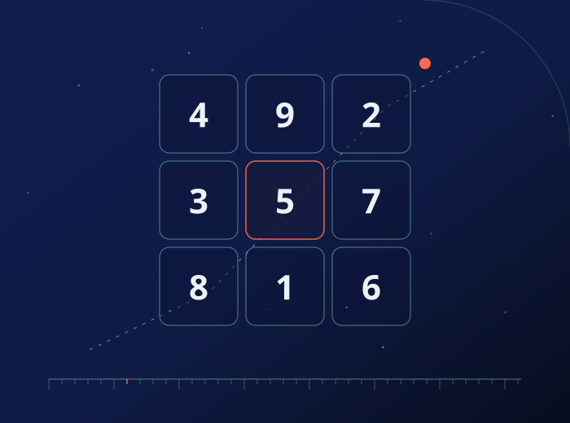
Life paths, repeating numbers and personal cycles, explained with restraint and room for your own reading.
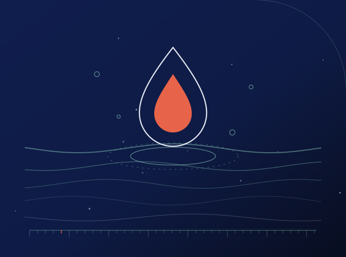
Routine, ingredients and realistic expectations for adult and family skin, without miracle claims.
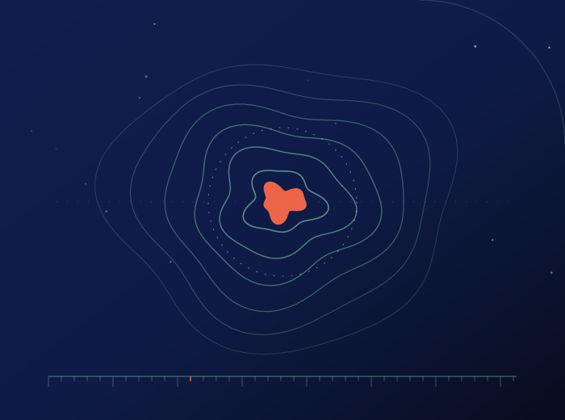
Attention, rest, habits and self-improvement, drawn from psychology and offered as education, never as therapy.
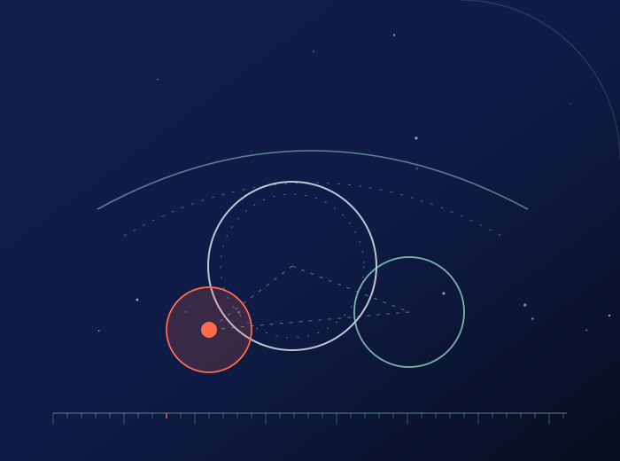
Routines, conversations and boundaries for parents and children, written to be useful on an ordinary Tuesday.
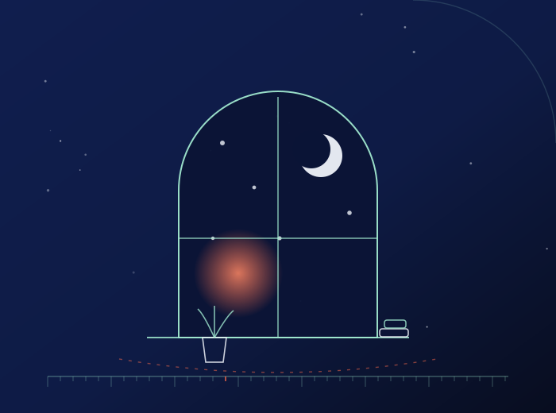
Plain-language reflections on mental health, with a clear line: education and support, not professional care.
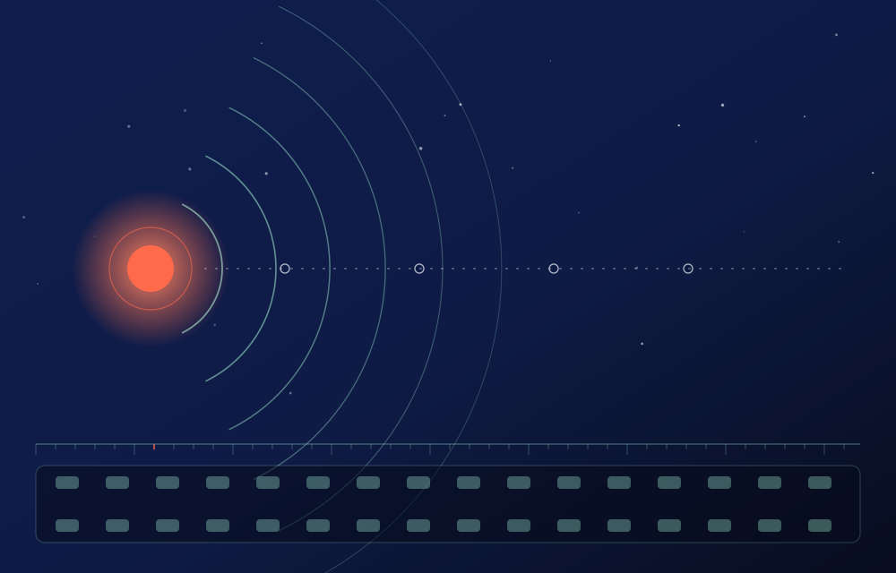
Silviya Aeterna will live on YouTube first. No channel link exists yet, and this page will not pretend otherwise. When the first video is ready, the link will appear here, in both languages.
No channel link, subscriber count or upload is shown here, because none of them exist yet.
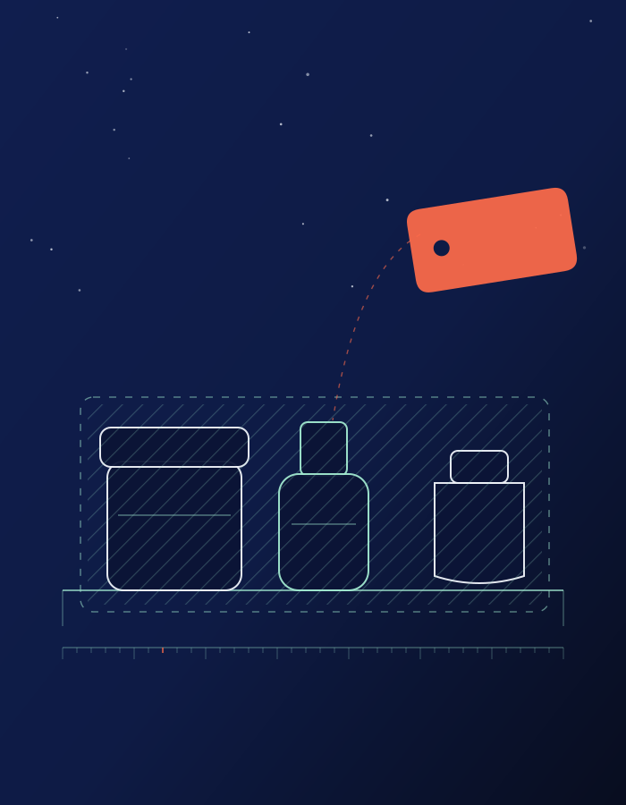
A secondary Oriflame pathway is planned for the future. Product details, availability and links will be added only once they are confirmed. Until then this is a placeholder, not a store.
No prices, product claims or shop links appear on this page.
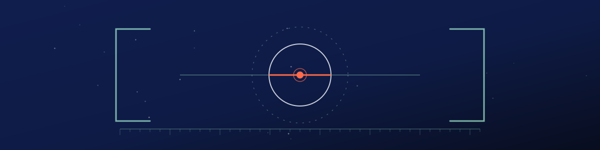
A short boundary note, kept in the same place as the content it describes.
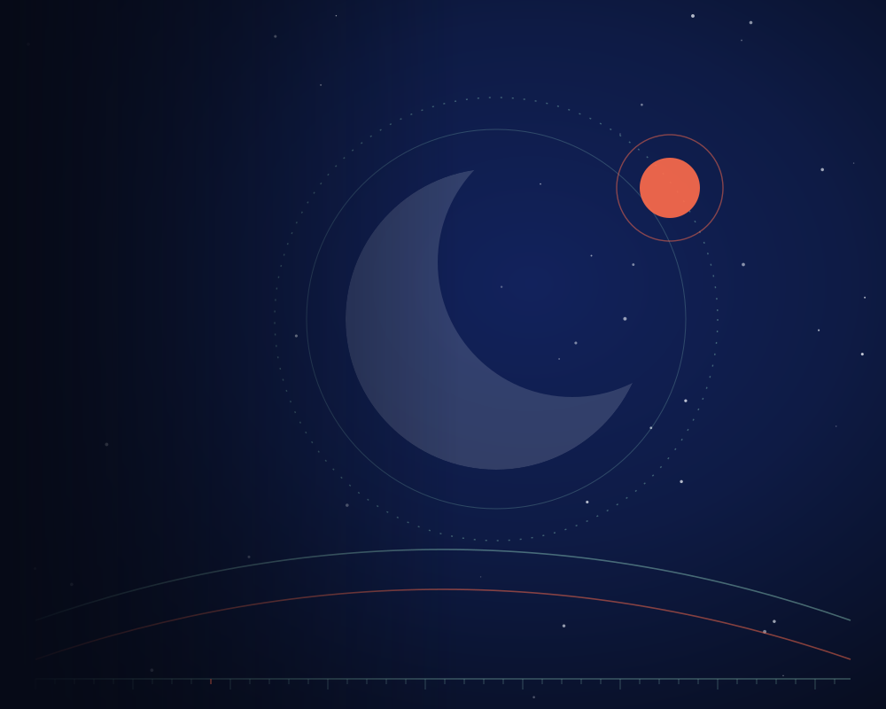
The first video is still being made. Until then, the atlas above is the honest version of what is coming.